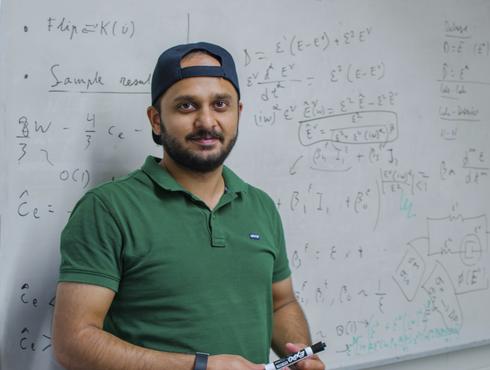
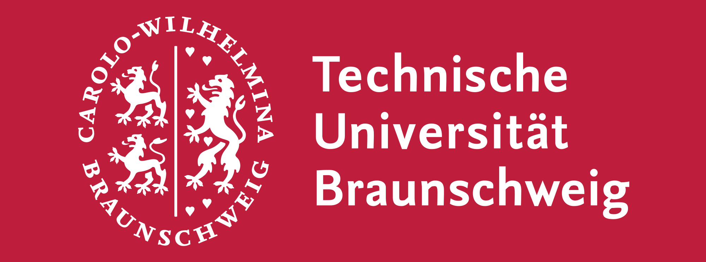
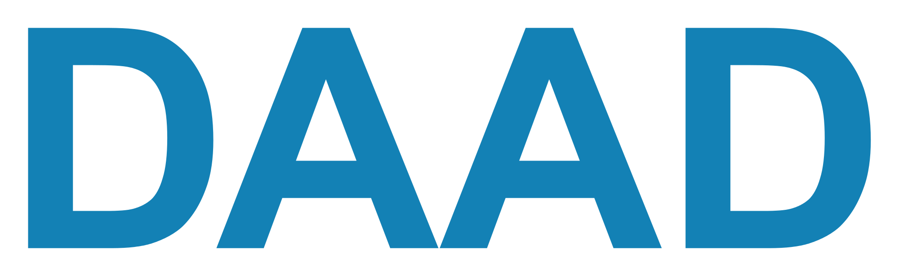

|
I am a Ph.D. student in Structural Engineering at Illinois working with Prof. Oscar Lopez-Pamies. My primary research area is theoretical and computational mechanics, where I work in the broad domain of analytical and numerical Homogenization. This involves studying partial differential equations (PDEs) with the coefficients oscillating at largely different scales. A natural manifestation of such PDEs occurs in highly heterogeneous materials such as composites. Currently I am working on the homogenization of porous/perforated composites. I am also pursuing a minor in Computational Science and Engineering In my not so distant past, I completed my MS in Civil Engineering (with a minor in CSE) at Illinois in 2015. Earlier still, I completed my B.Tech in Civil Engineering from IIT Guwahati ranking first in the graduating class. I spent a wonderful summer at TU Braunschweig (2014) as a DAAD-WISE fellow. I also spent another awesome summer at HKUST (2013) working with Prof Chris Leung.Email / CV / GitHub / Google Scholar / LinkedIn |
 |
{kind=link}
|
I'm interested in solving fundamental problems in Applied Mathematics and Numerical Analysis. A large component of my research spans around discretizing PDEs using the Finite Element Method, and more often than not using FEniCS. |
|
Bhavesh Shrimali, Victor Lefèvre, Oscar Lopez-Pamies JMPS, 2019, bibtex, pdf |
|
|

|
 |
 |
||
| IIT Guwahati 2011-2015 |
HKUST, Hong Kong Summer 2013 |
TU Braunschweig, Germany Summer 2014 |
DAAD Young Ambassador 2014-2015 |
UIUC 2015-present |
|
Template credits Jon |